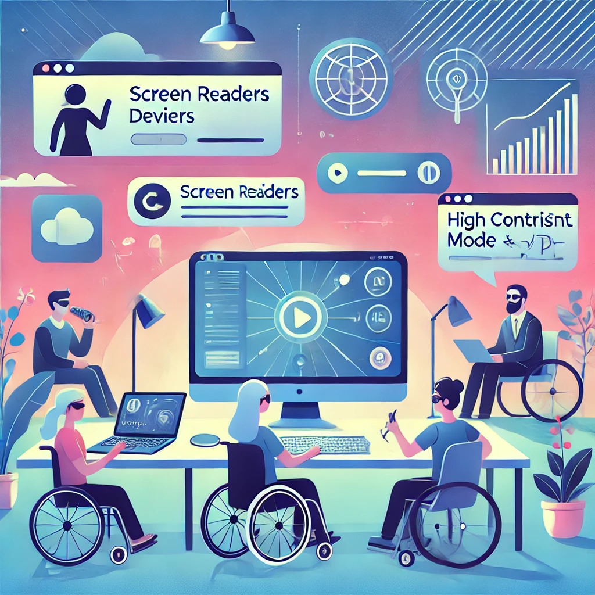

Recursos e Ferramentas
Para criar e manter um site acessível, é essencial contar com ferramentas e recursos que ajudem a implementar e validar práticas de acessibilidade. Aqui estão algumas das principais ferramentas disponíveis:
1. WAVE Accessibility Tool
Uma extensão de navegador que avalia automaticamente a acessibilidade do site, destacando problemas e fornecendo sugestões de correção. Acesse aqui.
2. Color Contrast Checker
Ferramenta para verificar se as cores do site atendem às diretrizes de contraste. Ideal para garantir boa legibilidade. Acesse aqui.
3. NVDA (NonVisual Desktop Access)
Um leitor de tela gratuito e amplamente usado por pessoas com deficiência visual para navegar na web. Acesse aqui.
4. Axe DevTools
Uma ferramenta de desenvolvedor que identifica problemas de acessibilidade diretamente no código do site. Acesse aqui.
5. Hand Talk
Plugin que traduz conteúdos do site para Libras (Língua Brasileira de Sinais), promovendo inclusão de pessoas surdas. Acesse aqui.
